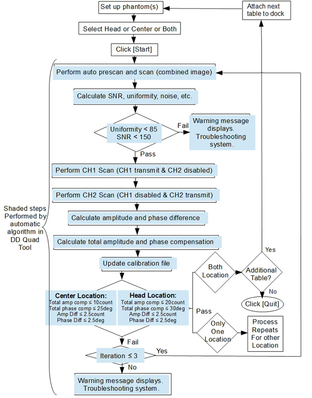
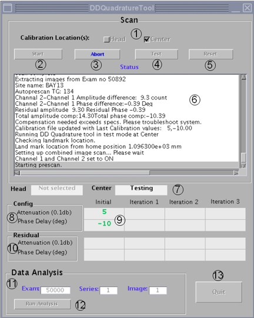

- 00000018WIA30291130GYZ
- id_152711155.8
- Sep 5, 2025 7:18:09 AM
Dual drive quadrature tool
The dual drive (DD) quadrature tool is used to compensate for the amplitude and phase differences in the transmit channels.
| Personnel requirements | |||
|---|---|---|---|
| Required persons | Preliminary requirements | Procedure | Finalization |
| 1 | - | 45 minutes | 5 minutes |
| Tools and test equipment | |||
|---|---|---|---|
| Item | Quantity | Part number | Manufacturer |
| Body Loader with Sphere Phantom | 1 | 2371511 | - |
| Service Foam Positioner | 1 | 5554839 | - |
| Head TLT Sphere for 3.0T (Pink Solution) | 1 | 2359877 | - |
| Pad for Head Sphere | 1 | 46-328383P1 | - |
| Phantom, 17 cm Sphere with Spout (SWS) | 1 | 5967320 | - |
| HNA SWS Phantom Positioner | 1 | 5962014 | - |
Dual drive quadrature tool overview
A dual drive system has two transmit channels. The dual drive (DD) quadrature tool is used to compensate for the amplitude and phase differences in the transmit channels. Amplitude and phase differences between the two channels can begin at the exciter and be carried through to the body coil transmit (the end of the imaging chain). Those differences can also be introduced at any of the intermediate passive components.
The dual drive quadrature tool does axial scans in three modes.
- Combined mode
- CH1 transmit, CH2 disabled
- CH2 transmit, CH1 disabled
The dual drive quadrature tool calculates amplitude difference between the CH1 and CH2 channels. It also calculates phase difference between the CH1 and CH2 channels. It then updates the system calibration file with the cumulative compensation required.
Test mode without calibration is provided.


| Locator | Item | Description |
| 1 | Calibration Location | Select Head or Center or both. |
| 2 | Start | Click Start to start the calibration. |
| 3 | Abort | Click Abort to abort the calibration process. |
| 4 | Test | Click Test to confirm the test results. The calibration file is not updated. |
| 5 | Reset | Reset the initial value to Default(0,0) or the last calibration value. |
| 6 | Status | Displays the dialogue of the procedure. |
| 8 | Config | The value is the calibration file and is updated when a successful calibration is completed. |
| 9 | Initial | Initial value before adjustment. |
| 10 | Residual | Residual after the compensation is applied. |
| 11 | Data Analysis | This mode allows the user to re-analyze scanned data acquired with the dual drive quadrature tool. It includes the combined image exam, series, image number, and prompts the user for the Pfiles created by the individual channel scans. This mode does not update the calibration file. This mode can also be used for troubleshooting because it provides some freedom in how the data is acquired. |
| 12 | Run Analysis | Click Run Analysis to initiate the data analysis process. |
| 13 | Quit | Quits the dual drive quadrature tool. |
Before starting the dual drive quadrature tool procedure
If you are calibrating multiple tables, follow these steps:
- Complete successful table calibration.
- Exit the dual drive quadrature tool by selecting Quit.
- Connect the next table to be calibrated.
- Restart the dual drive quadrature tool and repeat the steps above.
If you try to calibrate multiple tables without exiting the tool, you will see an error message.
Setting up for head only or both head and center scan
Procedure
Accessing dual drive quadrature tool
Procedure
- (For non-proprietary mode) Select Calibration > Calibration Tools > Dual Drive Quadrature, then Click here to start the tool.
- (For proprietary mode) Run the Calibration Wizard, and select Dual Drive Quadrature.